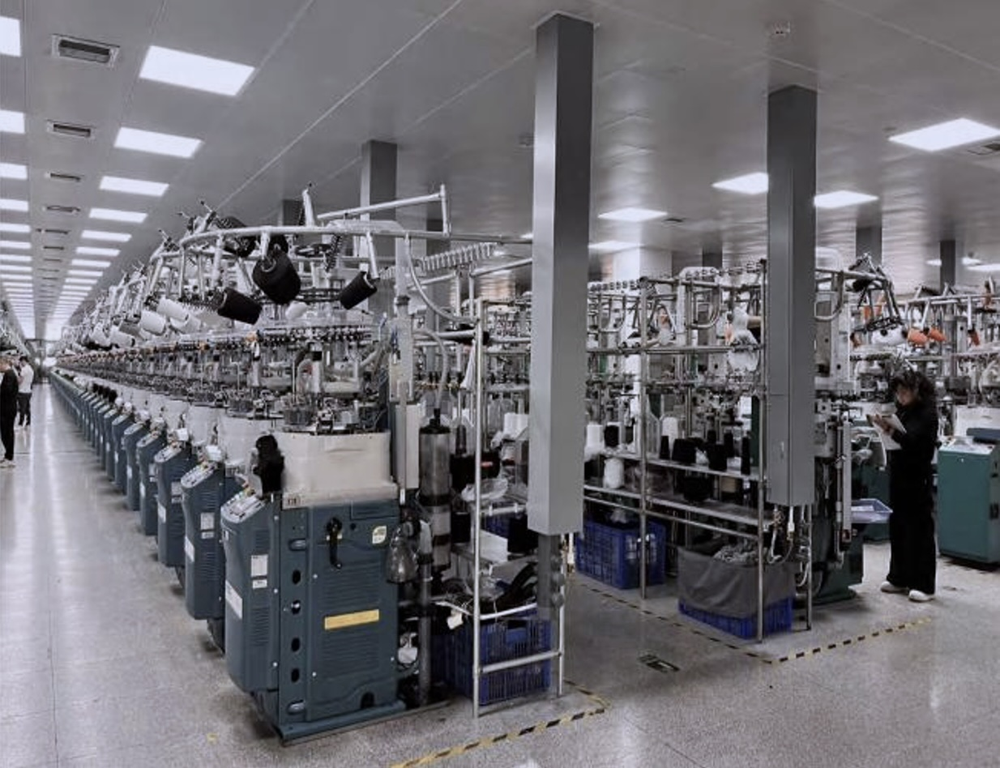
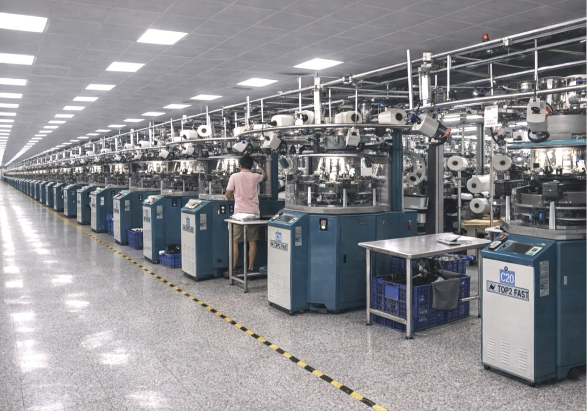
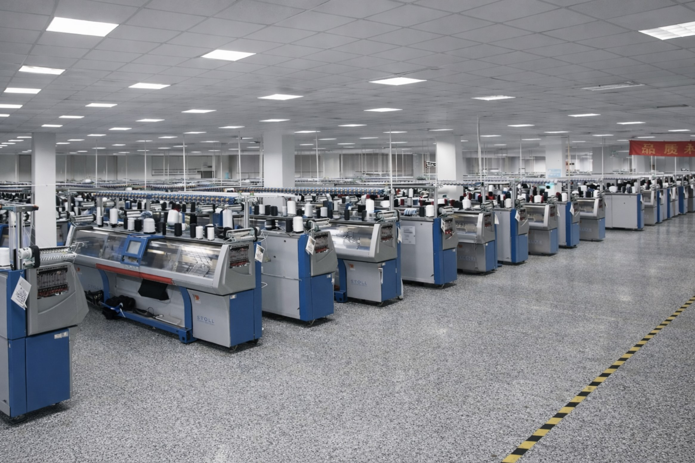
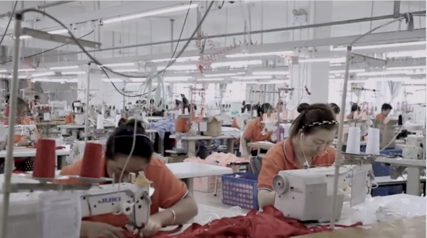

Saco Anhui Factory
Our Anhui production facility sits at the core of our operations, supporting multiple product categories — from development to large-scale manufacturing.
Partnership Saco Esa Silk — Suzhou →Spanning 26,000 square meters, with 18,000 m² dedicated to manufacturing, our Anhui facility is structured across specialized production units. We support brands across socks, seamless, underwear, swimwear and baby knitwear, combining industrial capacity with controlled quality standards.

Socks & Hosiery
Our sock manufacturing division is equipped with single-cylinder, double-cylinder and integrated knitting machines.
This setup allows us to cover a wide range of constructions — from basic everyday products to more technical and performance-driven designs — with stable quality and high-volume capacity.

Seamless
Our seamless production is based on advanced circular knitting machines, enabling body-adaptive garments with optimized comfort and fit.
We focus on technical constructions and performance-driven products, ensuring consistency across large production volumes.

Flat Knit
Our flat knitting capacity is primarily focused on babywear and kids garments, where softness, comfort and precise construction are essential.
The setup is optimized for smaller-size garments and delicate knit structures.

Underwear & Swimwear
We operate dedicated production lines combining lamination and sewing processes, supporting both underwear and swimwear programs.
This structure allows us to deliver stable, scalable production while maintaining control over fit, finishing and quality.